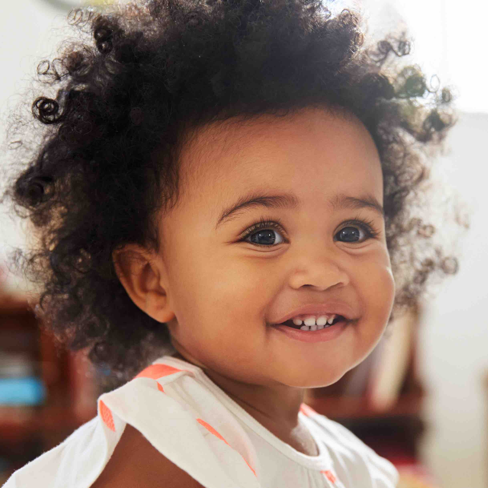
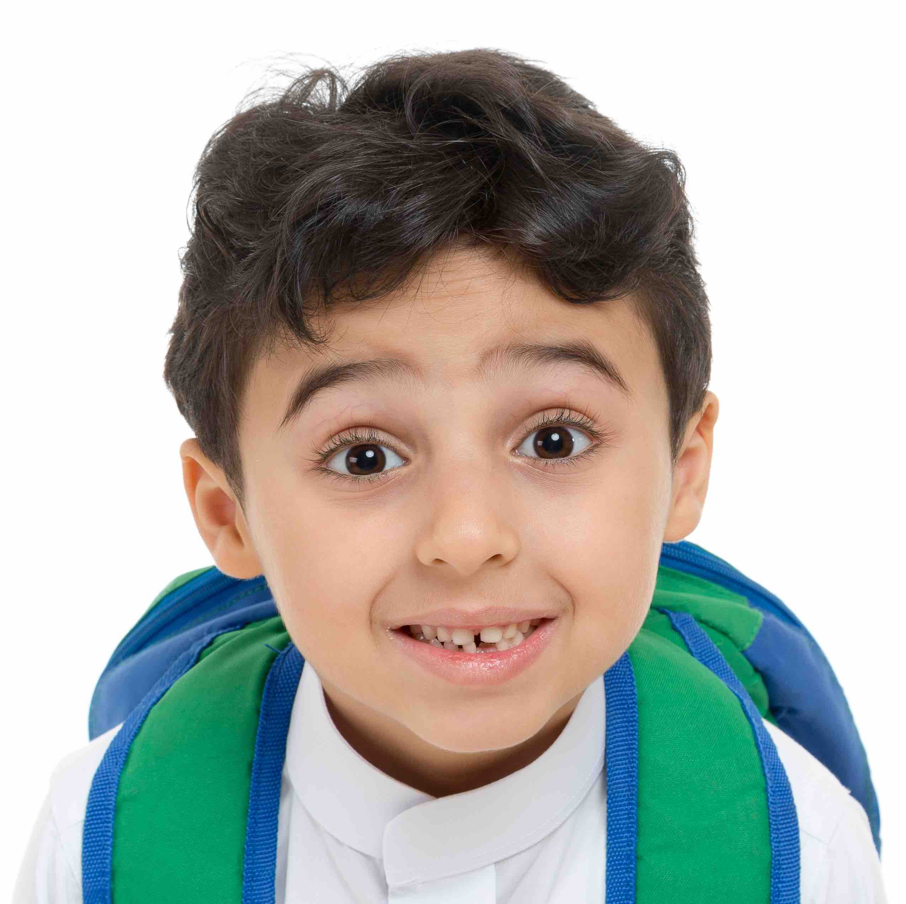

About Us
Muslim Children's Garden started as a playgroup in summer 2001. Abeer Al-Afifi & some of her dearest school staff (Teacher Maha, Nermine, & Saima) started this playgroup with their own children. Then by July 2001 Abeer Al-Afifi (Director) opened MCG as a preschool & kindergarten facility. With the same staff having this amazing enthusiasm to reach out to children and give them the chance to flourish within their colorful school, MCG continues its mission. When we as mothers saw how amazing are our children and found how eager they are to discover things, and reach for more, we felt this is our dream come true, and we should share this with other parents who wish to see their children bloom here at MCG.
Our Goals
The school is committed to serve the community with the following goals: Nurturing the growth of the child by providing a safe, stimulating and accepting environment; which will allow each child to:
- Develop individually through play that encourages learning.
- Develop socially through activities that encourage participation, cooperation, and leadership.
- Develop a sense of community as a Muslim by learning the basic Islamic values and by nurturing respect, understanding and acceptance of all people.
- Develop and form minds that can be critical, can verify and validate information for themselves and not just accept everything they are offered.
- Develop trust in them and feels confident in their ability to make choices.
- Develop cognitively in a prepared environment using sensory materials and methods.
Enrich our children with lessons in Quran, Islamic studies, Arabic, Geography, Mathematics, Science, Pre-reading skills and Art
Our Philosophy
Childhood is a time like no other. Tt's a time for exploring... creating... discovering about oneself... for meeting the world... for learning how to learn... for being accepted "just the way I am". It's a time for blossoming and being cherished ... a time for being allowed to be a child.
Our preschool administrators and teachers are committed to the belief that children CAN DO a lot. It is the role of the teachers to build upon those things that children are able to do. We believe that most of life's learning-including how to learn- occurs in the first five years of life. Since each child learns at his/her own space, our teachers will look to him/her to determine the next stage of development. This "can do" approach is the basic philosophy for our preschool. This "can do" viewpoint allows our Muslim society's precious future to become confident and enjoy successes in the atmosphere of respect, warmth, and love.
Testimonials
Tasneem Sabri
Zahrah and Ali's Parents
"We moved to the bay three years ago when Zahra was six and Ali was four months and it was extremely
difficult for us to leave all of our family and friends. Then we found MCG and in a quick time we made
many wonderful friends and Ms Abeer and all the wonderful staff became like our family. We made a new
wonderful home here and will forever be grateful to MCG!
We could never show enough gratitude to
our new family and home. Thank you so much MCG!"
Shaima Hammad
Leann and Ayman's Mom
"Jazakom Allah Khair Teacher Abeer and all the teachers and staff at MCG. My children and I have always considered MCG our second home. We and MCG share the same principles of raising well behaved, Muslim believers and happy children. MCG had a great effect that I have seen and felt in my children. They have planted many seeds of young muslims by gifting Islamic Education to the Peninsula, and they are continuously working hard to achieve their goals and contribute to our children's education and charachter. One more thing, I love all the Quran and Prophet(AS) stories my children tell me before bed, I love how they ask about before everything they do whether it is Halal or not? I love that at this young age they are proud to be Muslims, recite the Quran and love Allah and his Prophet Mohammad(SAW). You Did it MCG! May Allah give you the strength and power to give this gift to more and more children and reward you for all your efforts."
Farheen & Javad
Sarah's Parents
"MCG has provided our daughter Sarah Ahmed with a solid foundation in both Islamic studies and English
learning. This is a great community school with an outstanding team of teachers and staff, led by an
exemplary leader Abeer Al Afifi who is extremely passionate about teaching and children, and effective
discipline skills.
We consider ourselves very fortunate that Sarah goes to Muslim Children's Garden preschool and are
thankful to Abeer and the MCG team for working hard everyday to prepare her well for Kindergarten and
a great future. Our best wishes and Duas for MCG for many many years of continued success."
Ghina Morad
Yezen Hashem's Mom
"I had put my first son in a private "academically renown school" and thought that this was the best
in education. My son started then in the MCG after hours Arabic classes. As I got to know the
teachers, I just came to realize how wonderful the school was. It was the place where academics were
far more advanced than the "private competitive school" in the Peninsula but the unbelievable love and
care of the teachers was what made the magic happen.
When Allah blessed us with our second son, I didn't entertain for a second sending him to any other
school. Now that he's graduating after 3 wonderful years at MCG, I'm so excited to see him taking the
next step in his life but I'm heart broken as I know 100% that I will never find a match for this
school nor its teachers.
May Allah reward each and every staff member for installing the love of learning and the care they
provided for our kids."
Samia Shoman
Falestine and Jihad's Parents
"MCG has provided an immeasurably valuable and unique opportunity to Muslim parents on the Peninsula. When Falestine and Jihad are at school, we can rest assure that they are loved, cared for, and intellectually stimulated. As an educator myself, I deeply appreciate the time, effort, and creativity of the staff in caring for and educating our children."
Ghassan's Parents
"My husband and I researched many preschools before deciding on MCG. Our criteria was top education and an environment where our kids would look forward to going to school. MCG has been that and so much more. Every teacher brings a rich skill set and an amazing personality that embraces every child and develops them to their fullest potential. It's a lovely environment and we are so fortunate to have access to it."
Curriculum
Our preschool Program grows along with your child, teaching essential reading and writing, math, science and social skills in a logical, natural sequence that encourages children to learn step by step.
Quranic Studies
Children will recite and learn Quran every day and by the end of the year they should memorize about 8 to 9
Surahs. Children will also learn many Islamic manners (expressions + Duaa) and will listen to the prophets
stories through reading.
Arabic Studies
The children get to learn and recognize the alphabets in Arabic along with songs and stories.
-
Yellow Group - 2 Year Olds
Kids this age are terrific learners, with an amazing amount of energy and an eagerness to try new things. Everything they do, they do full speed. Accordingly, our classroom and lesson plans for two years old are packed with activities to encourage questions, confidence, interaction and most of all, discovery.
Our Early learning curriculum for two year olds gradually introduces key concepts that build literacy, using letter books, stories and daily activities. With music, books, movement and creative projects, learning is always exciting. Monthly themes, weekly topics and daily activities keep the curriculum focused and fun.
-

Blue Group - 3 Year Olds
At 3 children filled with pride and the desire to learn more. They realize, “I can do It!” our preschool Readiness program makes it easy and exciting for them to learn.
Each month, focused themes like “Transportation,” “Colors and shapes,” and “Family” teach key academic skills while encouraging children to explore and understand the world they live in.
Monthly themes, weekly topics and daily activities are all linked to our exclusive letter of the week letter Books, which reinforce reading readiness through letter recognition skills.
-

Red Group - 4 Year Olds
At the final stage of our comprehensive Preschool Program makes the most of your four year old’s growing ability to focus, use language and retain essential reading and math skills.
Our literacy-based program continues to pave the way for school, teaching advance letter recognition and phonics. Monthly themes and weekly activities further your child’s development in math, science and social interaction.
Our curriculum revolves around engaging monthly themes that take learning to the next level for your Kindergartner. Themes like “Me and my Friends” to “Dinosaurs” and “Earth”, promote readiness for reading, math, science, social studies and physical development.
-
Admissions
Admission is based on the availability of space. Children with special needs will not be discriminated. Acceptance and rejection will be determined on a case by case basis. The director is responsible for evaluating the special needs of the child and determining the ability of the school to meet those special needs. Siblings of our students are given priority for enrollment. Other vacancies are filled in order of date of application.
New Students
- Parents interested in enrolling their child must visit the classroom and have an interview with the Director.
- Child's age should be at least 2 years old to be accepted in our preschool.
- Preschool students registration forms can be downloaded here. Download the Enrollment form and
submit
it at the time of registeration.
- Forms:
- Enrollment form for Preschool with non refundable $75 registration fees.
- Parent's Report
- Physician's Report (to be completed by physician)
- Consent for Emergency Treatment
- Identification and Emergency Information
- Parent's Rights
- Personal Rights
- Forms:
- Other required documents:
- Birth certificate (No need for a copy, viewing it is enough)
- Copy of immunization card with all required immunization on it.
- Have your check book ready:
- *10 checks to be dated as follows:
( Aug 1, Sep 1, Oct 1, Nov 1, Dec 1, Jan 1, Feb 1, Mar 1, Apr 1, May 1) - Material fees: $250 dated August 1st, 2019
- Snack fees: $200.00 for 3 days & $250.00 for 5 days - dated August 1st, 2019
- **Two volunteer checks $75.00 each, dated (Jan 1, 2020 & June 1, 2020)
- $150 Fundraising check dated Jan 15, 2020
Returning Students
Have The Enrollment form and the Financial Agreement form (provided above) completed and ready with your check book ready:
- *10 checks to be dated as follows:
( Aug 1, Sep 1, Oct 1, Nov 1, Dec 1, Jan 1, Feb 1, Mar 1, Apr 1, May 1) - Material fees: $250 dated August 1st, 2019
- Snack fees: $200.00 for 3 days & $250.00 for 5 days - dated August 1st, 2019
- **Two volunteer checks $75.00 each, dated (Jan 1, 2020 & June 1, 2020)
- $150 Fundraising check dated Jan 15, 2020.
* Tuition is based on a school year of end of August to the beginning of June ( 40 weeks). All parents
are
required to pay the last months (June) tuition as part of the enrollment deposit, and must be paid in
August or along with the first month's tuition.
** Volunteer checks are refunded if 20 hours of volunteer work for the school are certified and submitted.
Note
Children are accepted into MCG program without discrimination of race, color, national or ethic origin.
The program is designed for children between ages 2 to 6 years. Children need not to be potty trained.
Enrollment deposit: Last week of August, one week in October, one week in December, one week in April, and
two weeks in June.
Staff
Sed ut perspiciatis unde omnis iste natus error sit voluptatem accusantium doloremque
Abeer Al-Afifi
DirectorMaha
TeacherNermine
TeacherSaima
TeacherContact Us
225 Tilton Ave, San Mateo, CA 94401
info@example.com
+1 650 678 8694